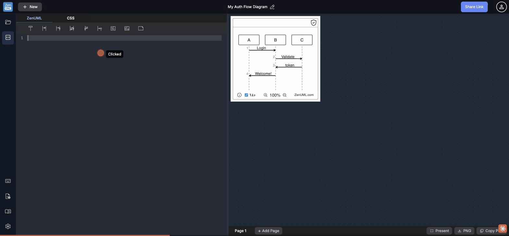

Desktop-only split pane · 24/25 touch targets fail WCAG 2.5.5 · 0 Tailwind sm: classes · no hamburger menu · no touch events

The .main-content-area is always display: flex; flex-direction: row with no responsive breakpoint that switches to flex-direction: column. At a 375px iPhone SE viewport, the default 30/70 split gives:
• Editor: ~113px wide — a 113px code editor is entirely unusable. A typical variable name exceeds the visible width.
• Canvas: ~263px wide — a 3-participant sequence diagram would be horizontally clipped at this width
• No toggle to switch to single-pane view — unlike Mermaid Live Editor or StackBlitz which offer "preview only" mode on mobile
The app has a viewport meta tag set to width=device-width, initial-scale=1, meaning mobile browsers will render the layout at actual screen width rather than shrinking to a "desktop" view — making the broken layout fully visible to mobile users.
max-width: 768px, set .main-content-area { flex-direction: column; }. Stack the canvas above the editor (diagram-first, as users on mobile are more likely to view than edit). Add a tab-style toggle ("Edit / Preview") to switch between the two panes on mobile. This follows the pattern used by CodePen, JSFiddle, and StackBlitz.At a 375px viewport, all interactive elements scale proportionally (0.195×). The resulting touch targets are far below the WCAG 2.5.5 minimum of 44×44px and the WCAG 2.5.8 minimum of 24×24px:
Only 1 of 25 elements passes the touch target test. Even the sidebar icon buttons — which at 44×50px look appropriately sized on desktop — collapse to 9×10px physical pixels on mobile. The entire interactive surface of the app becomes untappable.
@media (max-width: 768px) { button, a { min-height: 44px; min-width: 44px; } } as a baseline. Better: redesign the mobile layout to use a bottom tab bar (replacing the sidebar icon column) with full-width touch-friendly items. The existing desktop design is appropriate for pointer devices — the issue is there is no separate mobile layout.The left sidebar (5 icon buttons: My Diagrams, Editor, Keyboard, Language Guide, Settings) and the full header (New, diagram title, Share Link, avatar) remain unchanged at all viewport widths. There is no hamburger menu, no bottom tab bar, no collapsible sidebar — the mobile navigation is simply the desktop navigation crushed to unusability.
Modern responsive apps follow one of: (a) hamburger menu that slides in a full sidebar, (b) bottom navigation bar for primary destinations, (c) progressive disclosure where secondary nav items hide behind a "More" button. ZenUML uses none of these — the sidebar icon column at mobile becomes a 9px-wide strip occupying screen real estate while being untappable.
max-width: 768px, hide the vertical sidebar icon column and replace with a horizontal bottom bar showing the 3-4 most critical actions (My Diagrams, Language Guide, Settings, + a "..." overflow). Alternatively, convert the sidebar to a slide-in drawer triggered by a hamburger button in the header. This is the standard pattern for responsive tool apps (Figma, Notion mobile, Linear mobile).At max-width: 600px, the CSS rule .main-header { overflow-x: auto } kicks in, making the header horizontally scrollable. This means at narrow viewports, users must horizontally scroll to access the "Share Link" button, the diagram title, and the avatar — but there is no visual indicator (no scroll shadow, no chevron) that horizontal scrolling is available.
The "New" button and the "Share Link" button are on opposite ends of the header. At 400px, a user may only see one of them without scrolling. The diagram title — centrally positioned — may be hidden off-screen. This violates the principle of keeping primary actions within the visible viewport.
max-width: 768px, remove the diagram title from the header center (it's secondary information on mobile), show only "New" on the left and a "⋯" overflow menu on the right containing Share Link and other actions. This keeps all primary actions reachable without horizontal scrolling.The app has zero ontouchstart, ontouchmove, or touch* event handlers anywhere in the DOM (confirmed: touchEventElements: 0). It also has no @media (pointer: coarse) CSS adaptations for touch-screen devices. This means:
• No pinch-to-zoom on the canvas — users cannot use native touch gestures to zoom the diagram on a tablet or phone
• No swipe-to-switch panels — on mobile, swiping left/right could naturally switch between editor and canvas views
• No touch-friendly scrolling in the editor (CodeMirror's touch support is limited without explicit configuration)
• Hover-dependent tooltips never trigger on touch devices — all the tooltip information (case 19) is inaccessible on mobile
@media (pointer: coarse) CSS rules to increase spacing and target sizes for touch users (even before a full mobile layout redesign). For the canvas, add touch-action: none on the diagram iframe and implement pinch-zoom via the Pointer Events API. For the editor, enable CodeMirror's touch-friendly mode with lineWrapping: true.